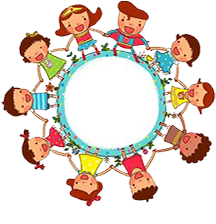

世
せ
界
かい
の
国
くに
データベース
お知らせ
2018/3/20
世界の国データベースを公開いたしました。
2018/3/20
世界の国データベースを公開いたしました。
2018/3/20
世界の国データベースを公開いたしました。
2018/3/20
世界の国データベースを公開いたしました。
国
くに
調
しら
べに
使
つか
えるワークシートはこちら→
ワークシート
地
ち
域
いき
から
選
えら
ぶ
地
ち
域
いき
から
選
えら
ぶ
名
な
前
まえ
を
入
い
れて
選
えら
ぶ
地
ち
域
いき
国
くに
や
地
ちいき
域
表
ひょう
示
じ
させる
項
こう
目
もく
州
しゅう
首
しゅ
都
と
面
めん
積
せき
人
じん
口
こう
平
へい
均
きん
寿
じゅ
命
みょう
主
おも
な
言
げん
語
ご
国
こっ
旗
き
（地
ち
域
いき
の
旗
はた
）について
通
つう
貨
か
伝
でん
統
とう
的
てき
な
料
りょう
理
り
さかんなスポーツ
過
か
去
こ
のオリンピック
開
かい
催
さい
都
と
市
し
2016
年
ねん
リオオリンピックでのかくとくメダル
数
すう
調
しら
べる